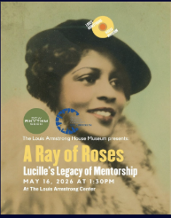
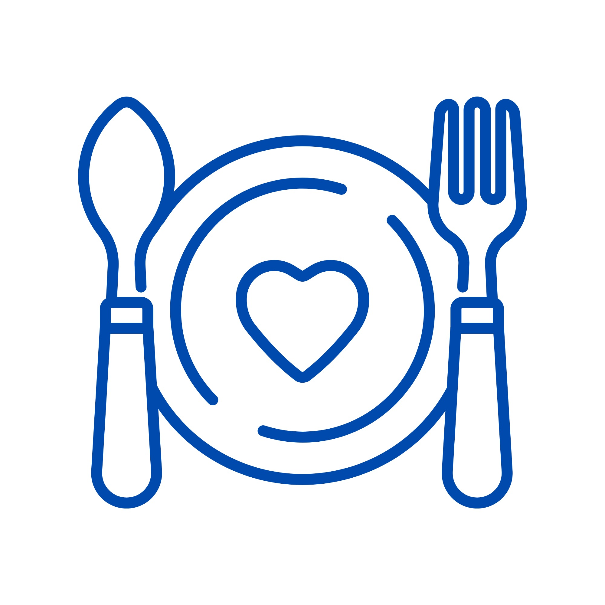
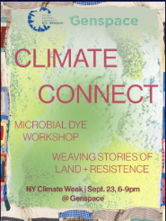

Projects.
Launching new work, supporting what's already running, and building community — one volunteering side-quest at a time.
Active projects
Continuing this term-
01

So Fresh So Clean
Led by Kemi, Seun, Cherise, Jay & Naima. Brings mental health resources into salons, barbershops, and beauty spaces, partnering with beauty professionals to support client well-being through Mental Health First Aid kits — zines, digital resources, posters, and sponsored products.
-
02

Sow Rhythm Seed
Led by Cherise. Combines gardening, culture, and community through hands-on workshops that celebrate the legacy of Louis & Lucille Armstrong while exploring local history — teaching participants to mix soil, plant seeds, and care for plants, with take-home gardening kits.
-
03

Link the Lunch
Led by Ky'Naisha & Vanshika. Part of our Youth Collective Initiative — partners with community fridges to distribute meals where they're needed most, reducing food waste and strengthening community care through shared meals and mutual aid.
Temporarily on hold
Looking for new leads-
04

Climate Connect
Led by Pranathi. Brings people together to connect around climate action and share ideas for a more sustainable Brooklyn — empowering young leaders through conversations, storytelling, and collaborative art.
-
05

MYCO
Led by TBD. Connects youth, leaders, and organizations around climate action and environmental justice through workshops, discussions, art, and wellness experiences that celebrate local changemakers.
-
06

Equal Air Collaborative
Led by TBD. A cross-hub project raising awareness of the health, environmental, and economic impacts of air pollution, and driving collective action toward cleaner, healthier cities.
New potential projects
Exploring, led by Joaquín-
07
OAS & UN Dialogue
From local action to international dialogue — a project connecting our work to the Organization of American States and the United Nations.
-
08
Migration Project
A cross-hub collaboration with Hispanic hubs — Madrid, Colombia, Central America, and Mexico — exploring migration through a Global Shapers lens.
-
09
LGBTTTIQ+ Initiative
A cross-hub initiative with hubs in Norway, Brazil, Morocco, and Costa Rica, centering LGBTTTIQ+ experiences and advocacy worldwide.
-
10
Shred the Debt
A debt-literacy project aimed at helping Brooklynites understand and take control of personal debt.